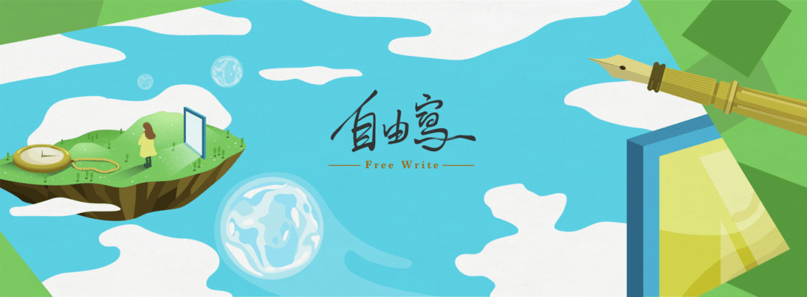
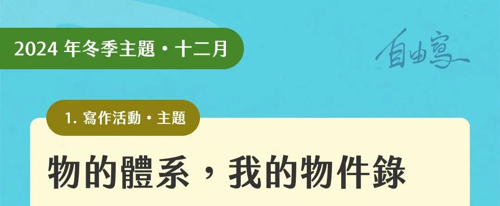
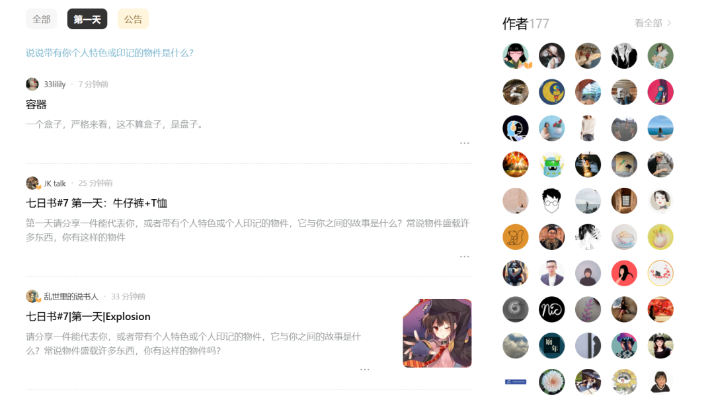
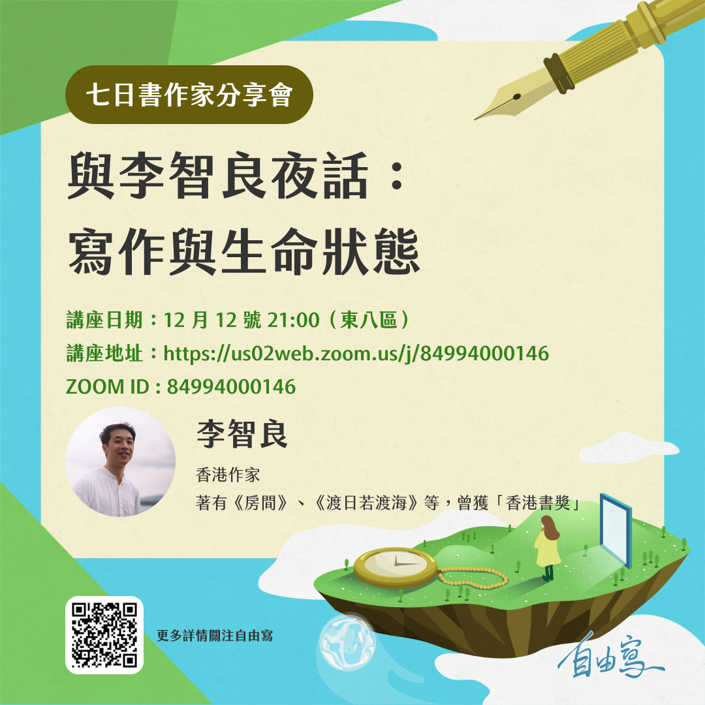
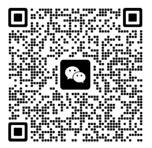

願你更自由一些~
本月的七日书主题是「物的体系」，题目包括各种有关物的内容，例如代表自己的物件、与他人关系之物、具有时间感的物件、日常生活与家族的物、最想展现让他人看到的物件等等。
我们常说，物件盛载许多印记，一看到某件物件，各种想法、回忆涌上心头，它是一个时间器、也是一个容器，存放人的轨迹。
物件也关联到自己的过去、现在与未来。它可以是个人的童年、青春年代、当下；有着跟家人、朋友、亲密对象的记忆。一件物品，当中有着许多的故事和感觉：快乐的、悲伤的、难以忘怀的，又或不堪回首的。除了个人之物，物件也可以关联到你的城市、故乡、国家，可以展现出一个地方、社会的精神内容与核心所在。
来与海内外177位华人一起共写「七天日记」，分享你的「物的体系」吧。

第一天
请分享一件能代表你，或者带有个人特色或个人印记的物件，它与你之间的故事是什么？常说物件盛载许多东西，你有这样的物件吗？
图: Matters
第二天
物件可以象征你与他人的关系，请为我们分享一件这样的物件故事。
它可以是礼物、纪念物、信物，任何代表彼此关系的东西，或者透过这个物件，你与对方产生了怎样的连结？
第三天
在你的日常生活中，或者当你处于一个外在变动比较大的环境时，什么样的东西能带给你安心感？
它可以是有用的、无用的，可以是随身携带的，或者是放在家里的；那样物件，可以是食物、或者一个习惯等。总之，有它在，你会感到安心。
第四天
写一个家庭里面的物件，它能够代表你和家人之间的互动、相处经历，跟我们分享它的小故事。
比方说，它可以是日常生活中的家居小物，或者是与家族史有关的回忆之物。
第五天
分享一件遗失了、遗忘了，又或封尘了的老物件，而某天你突然想起了它，徐徐想起一段记忆。跟我们分享一下那物件以及当中的故事吧。
第六天
如果你有一间自己的博物馆，你最想展示的是什么物件？
各个城市也有不同的博物馆，公营的、私人的，展示物件的角度、历史感、当中的叙事都会很不同，如果你有自己一间博物馆，有什么东西是重要的、想被看见的？分享一下当中的物件叙事，演绎。它可以跟你的个人，又或跟你的城市有关。
第七天
想象一下，来自从前或未来的你，会送一份什么礼物给现在的自己？
它可以是任何东西，可以是实物、想象之物。
写作与阅读：https://matters.town/e/8t5liudbtpup?type=Q2FtcGFpZ25TdGFnZToxODQ (科学上网)
活动介绍
去中心化写作平台Matters 开启「自由写」计划，招募「七日书」写作社群，希望跟你一起每天练习，陪你完成人生日记，同时跟小组的作者们交换日记，互相伴读。
在这个为期七天的计划里，将有一群同伴与你一起，每天一个题目，以自由书写的方式，完成七天的日记。它是一个练习，让你沉淀生命故事的同时，亦勇于相信自己的写作；它是一场陪伴，知道写作路上有人阅读，这是一场自己的旅程，更是结伴同行。
自由写（Free Writing）是一个专门的写作技巧，意指人们在一段有限的时间内写作，有时是根据指定的题目书写，写作时不太关注修辞、常规和结构，让思维自然流敞。作品不一定完美、不一定严谨，但可以帮助作者克服自我批评的障碍。作家彼得・艾尔博（Peter Elbow）致力推动自由写作，「写作的结果是你必须从用错的词写错的意思开始；但要持续写作，直到用对的词来表达正确的意思。只有到最后，你才会知道自己在说什么。」
「自由写」亦是回到心里的那个地方，对应一个题目，只写二十分钟、半小时，写作时要保护这段时间，屏除干扰，跟思绪尽情对话，最后看看你写下了什么，并且尽量不要评判它。因为你要相信自己写下了最重要的内容。
作家分享会
本期七日书同场加映，邀请到香港作家李智良，分享他的写作经验、生命状态。李智良曾获「香港书奖」及「香港中文文学双年奖」，亦曾参与美国爱荷爱大学国际写作工作坊，并于大学任教创意写作。个人著作包括《白瓷》、《房间》、《渡日若渡海》等。李智良近年在海外深造，对离散、情感与集体记忆相关的创作甚感兴趣，今次请到他来分享。

活动群组：

相关文章：社区投稿｜他们在去中心化平台围炉写作